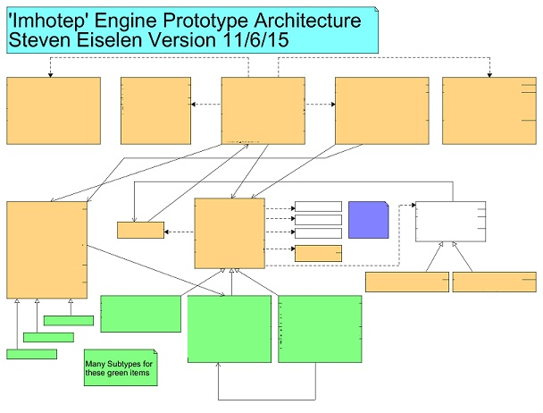
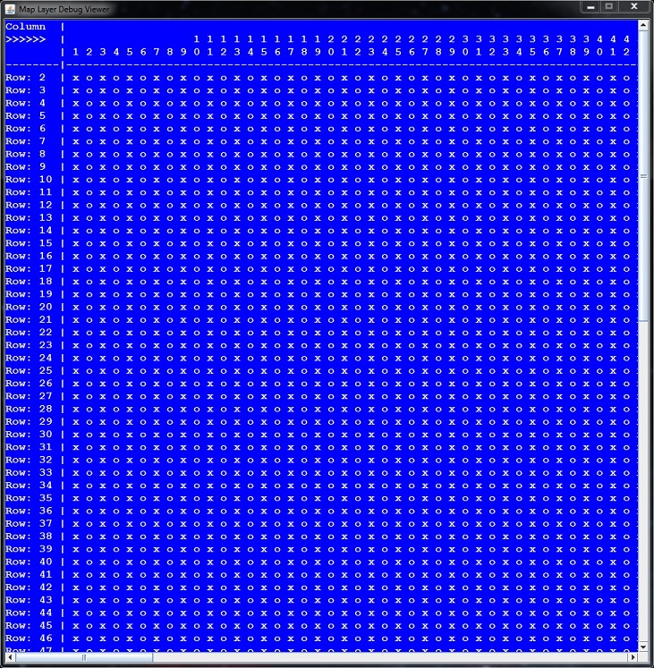

30 Day RTS Game Challenge

Creating an RTS / Settlement Management Game in 30 Days
Quick-And-Dirty Development blog for Alive In The Dead
Written / Maintained by Steven Eiselen, November 2015
+ 11/4/15 Progress:
- Official First Day of Deveopment. I wrote a very rough cut of the Design Document / Game Bible from several smaller scale game ideas I had from as far back as 2012. It had been my dream for several years (and part the reason I went back to school and into Computer Science) to make virtual environments: particularly 'classic-style' RTS / management games like Westwood Studios' Command and Conquer series (before Electronic Arts bought it, so I stop at Tiberian Sun and reject games at/after Red Alert 2); and Blizzard's Starcraft 1 (trivia: alongside Runescape, the only two games I have ever played multiplayer in)
- I also began to sculpt the UI. I planned for a Main Menu, an Audio submenu, a Create Game menu, and an in-game menu that would allow the player to exit the game, save the game, and go to the audio screen to change sfx and music settings, even allowing the player to select songs from a soundtrack
- During section, I met with my team who looked at / reviewed the spec. We're uring a 'win goal' of developing a cure - which is a pretty sweet idea so we're going with it. The rest of the working part of the day was spent doing some more conceptual drawings and planning to refine the design document, which I will pick up on Friday. The afternoon section meeting went over animation, giving me a gameplan for how to deal with unit anims; and Dan Vaugn reminded of the Factory Design Pattern which I will be using for unit creation (and maybe zombies too)...
+ 11/5/15 Progress:
- I was largely bogged down with AI stuff today, but managed to experiment a little with tilesets (images below). I have a general idea of how, in several 'phases', I'm going to create the procedural map of the landscape and have it looking good


+ 11/6/15 Progress:
- Attended Section today - worked on more ideas per the in-game view and other views, as well as some game dynamics / features. For example: I'm going to implement units occupying buildings as just throwing different skins on the building as opposed to showing an interior with the units in it. This has some benefits, mainly being able to 'hide' units in buildings as opposed to having to render them which may save performance space and an easier implementation of the building being raided by zombies, damaged and even desroyed. Excited to play with that implementation!
- I created a Github site on my account for recording progress and updates (yep - the very one you're reading!) as a development blog as well. So stop by for more progress!
- FINALLY The Design Document / Game Bible is done! I created a PDF of it and pushed to the repository. It will be used to scuplt the UML / architecture for the game as well as the art. I am now working on the first assignment involving creating the candidate objects, sequence diagrams and UML diagrams for the current prototype.
- Took another long look at the spec. I still want to incorporate an RTS but need to allocate implementation for the AI of my units actually auto-managing the base based on the commander's directives. I have several ideas as to how I'm going to 'have my cake and eat it too' in terms of merging my vision with the project spec. However the assignment due later tonight holds precedence for now...
- We had to hand in an artifacts / basic architecture assignment by tonight showing 10 major objects and what they did, developing a UML for them, and sketching out a sequence diagram. I decided to include 11 of the key high level objects and UML connect them with the inclusion of some of their dependencies. This left me with a UML Diagram of 22 object items. I've atached the censored diagram below. This plus the sequence diagram was a bit of a pain to make, but I found it to be SUPER important in terms of wrapping my mind around the implementation. Everything got done and turned in - and I shifted focus towards implementing some of the components.

+ 11/7/15 Progress:
- Took a part of the day off to de-stress and think about the game instead of rushing to develop. For instance: to conform with the spec, the player will now NOT be able to build structures besides barricades. They will have to repurpose buildings. To repair them, workers need to be sent into the buildings.
- I developed an architecture for rendering the map and everything on it. What I can comment on is that it involves layers. I'll also be working with a 100x100 cell map size maximum. I also made the first Util program! It spits out map text (char) data in the form of a JScrollpane. You'll notice that 'Row 1: ...' is missing - it's not: instead it's hiding at the end of the text of the previous line because of a missing newline character!

>>> LIVE >>> Steven is in studio developing right now. Check back for more upgrades by the day!
Disclaimer: This is a project for a university class. Some assets shown in videos and screenshots may be from copyrighted sources, but they are used for nonprofit academic purposes only!
Version 11/6/15 Written Content (C) 2015 Steven Eislen (www.steveneiselen.com)